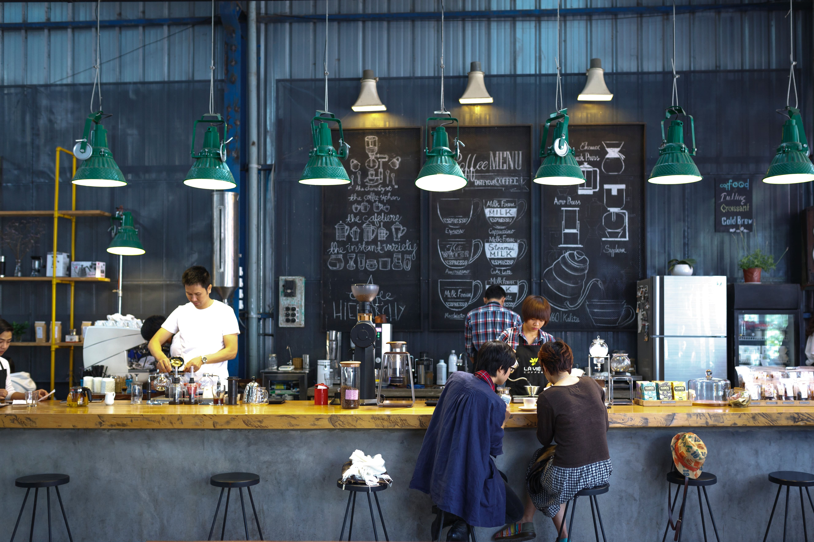

Los diferentes tipos de café
El café es mucho más que una bebida; es un universo lleno de matices, desde su origen hasta la manera en que se prepara.
Cada tipo de café tiene una historia que contar, un sabor único que descubrir, y un aroma que evoca emociones y recuerdos.
Espresso
El espresso es un método de preparación de café que produce una bebida pequeña y concentrada.
Se elabora forzando agua caliente a través de granos de café finamente molidos bajo alta presión.

Capuchino
El capuchino es una bebida de café italiana que combina partes iguales de espresso, leche vaporizada y espuma de leche.
Suave y cremosa, esta bebida es popular por su equilibrio entre el sabor fuerte del espresso y la suavidad de la leche.
Latte
El café latte, o simplemente latte, es una bebida a base de espresso con una mayor cantidad de leche vaporizada, creando un sabor más suave y menos intenso que el capuchino.
Con una textura sedosa y un sabor más dulce, el latte es perfecto para quienes prefieren un café menos amargo y más cremoso.
Affogato al Cacao
Un giro delicioso al clásico affogato, donde una bola de helado de vainilla es "ahogada" en un espresso caliente,
y luego espolvoreada con cacao en polvo. El contraste entre el helado frío y el espresso caliente,
junto con el toque de cacao, hace que este postre sea irresistible.
Informacion
Café Tonic
Una refrescante y moderna combinación de espresso y agua tónica.
Este cóctel de café mezcla la intensidad del espresso con la efervescencia y el toque amargo de la tónica,
creando una bebida sorprendentemente equilibrada y perfecta para los días calurosos.
Informacion
MISIÓN & VISIÓN

Brindar una experiencia única y acogedora a través de un café de especialidad,
elaborado con los mejores granos y preparado con pasión, fomentando la conexión entre las personas.

Ser reconocidos como la cafetería de referencia en la ciudad,
destacando por la calidad de nuestro café y la calidez de nuestro servicio,
convirtiéndonos en un espacio de encuentro y disfrute para la comunidad.
Blog
Descubre el mundo del café en nuestro blog, donde exploramos recetas innovadoras, técnicas de preparación y tendencias del sector.
Únete a nosotros para obtener consejos de expertos, conocer las historias detrás de cada grano y sumergirte en la cultura del café.
Aventuras del Café: Recetas y Experimentos
Explora recetas únicas y experimentos creativos con café. Desde cócteles innovadores hasta postres deliciosos,
este blog ofrece ideas frescas para llevar tu experiencia con el café a un nuevo nivel.
Perfecto para los entusiastas que buscan añadir un toque especial a su rutina cafetera.

El Arte del Café: Técnicas y Consejos
Descubre las técnicas y secretos detrás de la preparación perfecta del café.
Este blog cubre desde métodos de extracción y técnicas de espumado hasta consejos para elegir los mejores granos.
Ideal para quienes desean perfeccionar sus habilidades baristas en casa.

Café del Mundo: Cultura y Tradiciones
Viaja por el mundo del café y conoce las diversas culturas y tradiciones que rodean esta bebida global.
Aprende sobre las regiones productoras de café, sus métodos de preparación únicos y cómo el café une a comunidades alrededor del mundo.
Perfecto para los amantes del café que quieren expandir su conocimiento cultural.
Informacion